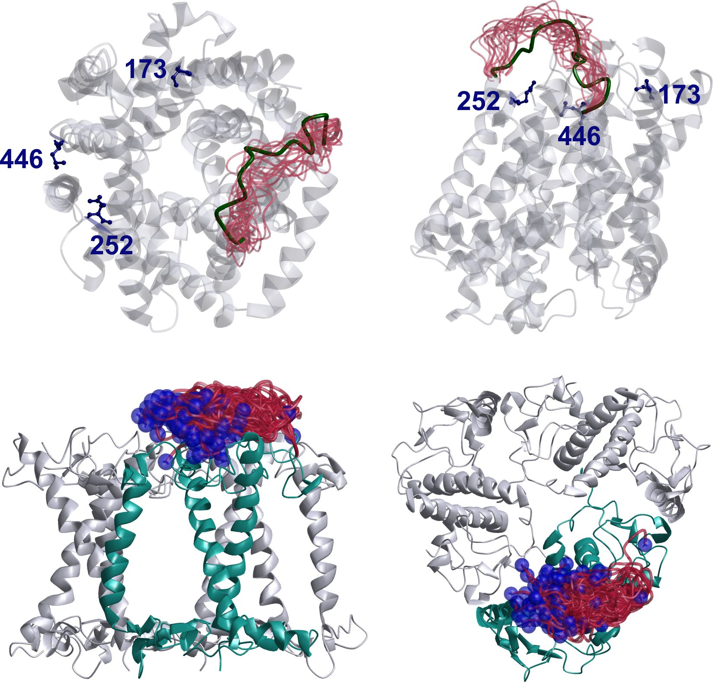

An open-source program for visualization, inspection, and improvement of models of proteins and protein assemblies based on restraints from multiple experimental techniques.

The picture shows modeling of disordered domains of proteins based on long-range distance distribution restraints (LRDDR). The upper two panels depict the outcome of a test, where the well-defined loop of residues 71-87 (green coil) was remodelled by an ensemble of conformations based on 24 LRDDR to spn-labelled beacon residues 173, 252, and 446. In this case, the restraints were created in silico. The lower two panels depict modelling of the N-terminal residues 3-13 of major plant light harvesting complex LHCII from restraints internal to the modelled loop, beacon restraints, homotrimer restraints, and bilayer immersion depth restraints. See changes in version 2015.1 for a short description of these new functions.
The corresponding restraint files can be found in the demo directory of MMM.
This manual is an automatic compilation of MMM help files and is provided for overview. The PDF version shows links in blue color, but these links are not active. Please use the on-line help if you want to browse via the links. Links to other help files were converted into cross references to subsections or subsubsections (e.g., Section 3.2 or Section 1.2.12). Subsections and subsubsections correspond to individual help pages. Sections (e.g., 1 General) group help pages. Links to different paragraphs in the same help file do not result in cross references in this manual.